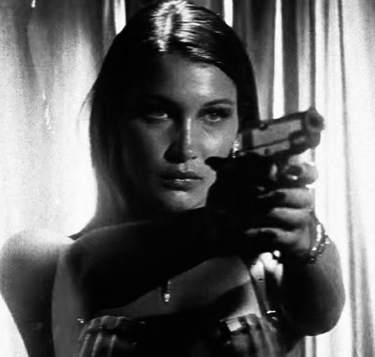
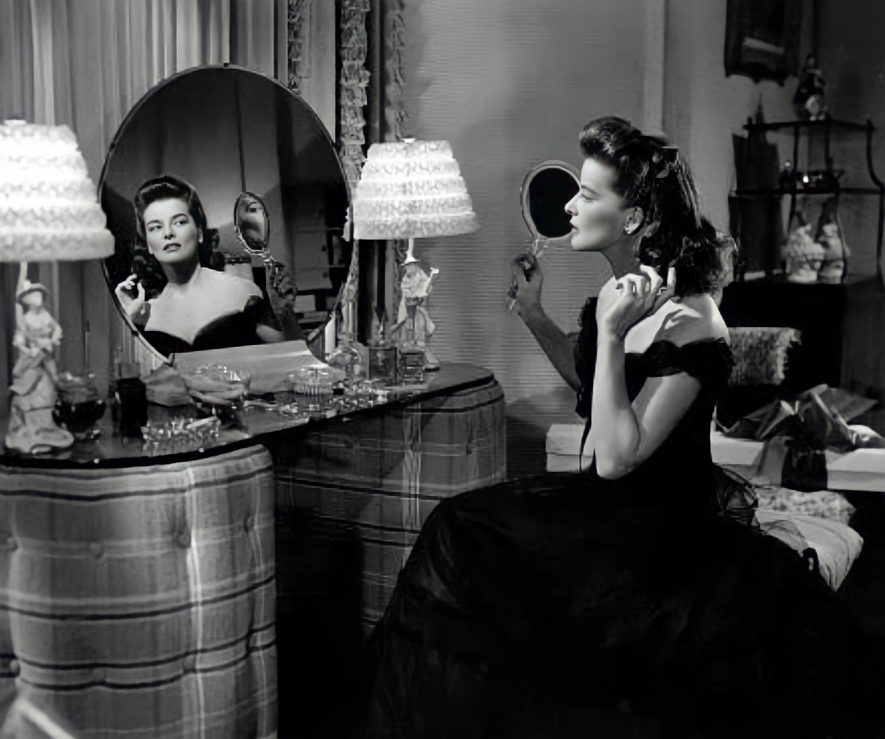
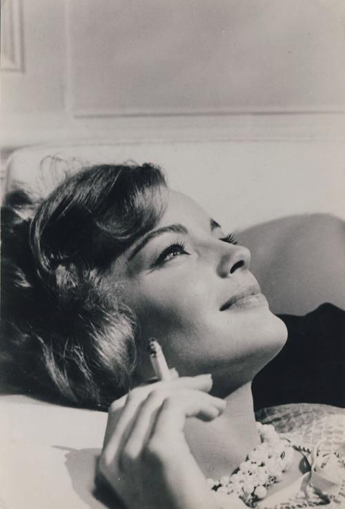
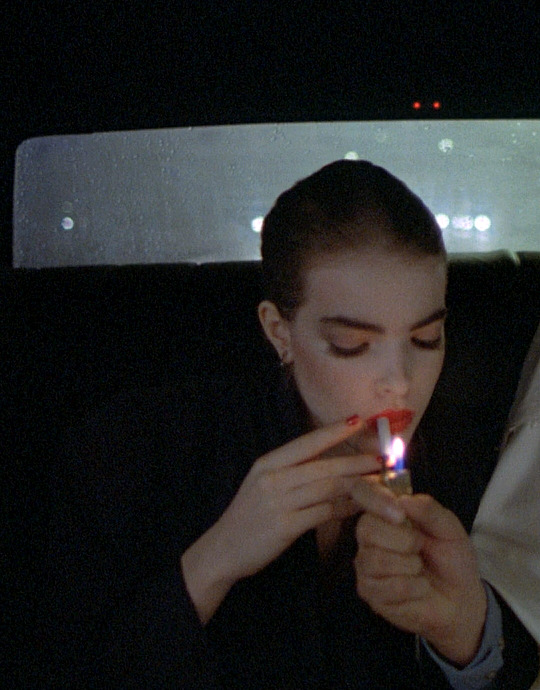

My name is Arianna, or Ari, she/her, 19, and I've been making video edits for almost 5 years (est. June 11th 2018)
I've used After Effects since June 2019 (I used it just for coloring and effects until October 2019, when I finally learned some transitions). Prior to that, I used Videostar
I've been interested in Classic Hollywood since I was young, and it was through editing that I managed to find others and expand that interest
Through editing, I've found so many more films, people, and works, and it's seriously influenced my life

My current profile picture
My Usernames (and what they meant):
On November 29th 2018, I made my first editing Instagram, and thus, this began the long list of my usernames:
iconeditz.videostar / iconseditz.vs -> I literally made this up on the spot.
bvrgnvdy.mp4 / bvrgvndymp4 -> burgundymp4 -> my favorite color is burgundy.
mqneytrees -> moneytrees -> from "Money Trees" by Kendrick Lamar, one of my favorite songs.
k8sh3qbxrn -> kateshepburn -> based off of Katharine, or Kate, Hepburn, my favorite actress and probably the person I've edited the most.

Katharine Hepburn in Woman of the Year (1942)
So where can I find your edits?
You can click the links in the previous section, the bvrgvndymp4old account has edits from November 2018 to October 2019, and the bvrgvndymp4 account is from October 2019 to May 2020. On my YouTube I have some edits from later in 2020 and then one from 2021, and some of my favorites from 2022 onward, I don't post every edit I make.
Is there an edit archive for the ones that you didn't post?
I would make one, but I don't really know how to go back and find the credits for audios, coloring, overlays, etc retroactively.

Photo of Romy Schneider, another actress I've edited a lot this past year
Why did you stop editing on Instagram?
As much as editing on Instagram helped me find a community, it was terrible for my creativity, as I would get too caught up in likes and views, as opposed to me actually liking the edit, and often lead me to negatively compare myself. Making edits for myself first has led me to feel a lot more proud of my work, and that's also kind of why I don't post all of my edits, I only post ones that I feel as if I want to share with others.

Ms .45, (1981)
Where can I find your audios?
For the audios that I make, my soundcloud is here, thought I do need to add my more recent audios.
Lana Del Rey, my favorite singer (because of course, someone obsessed with vintage and Classic Hollywood would love Lana)